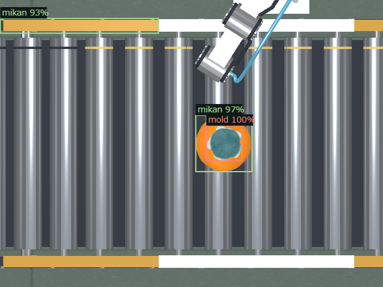
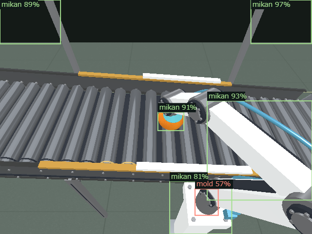
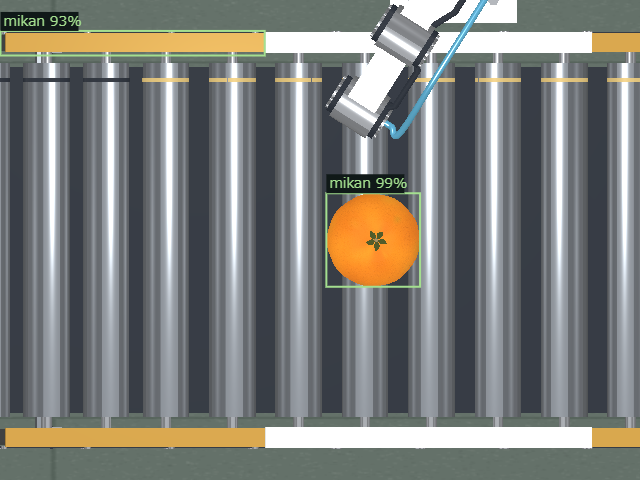
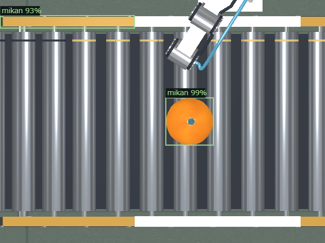
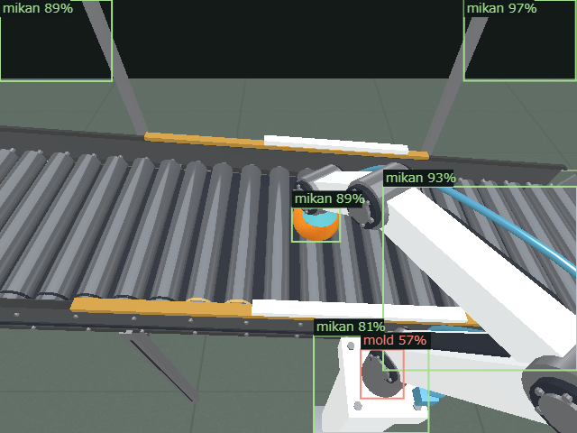
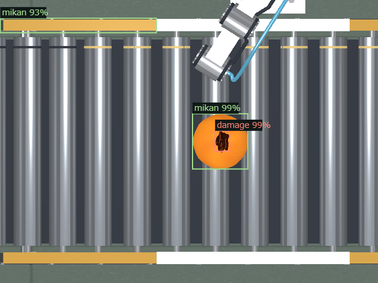
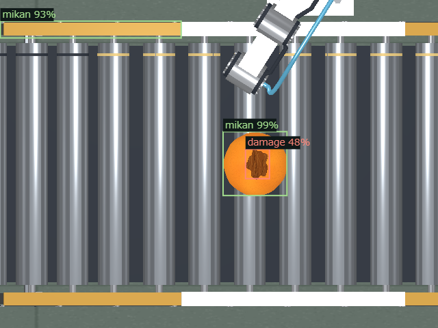

カビ：広い病斑


選別デモへ戻る ／ 2026-11-09
上下のくぼみ・ヘタ・PBR果皮（ワックス層なし）へ変更し、従来の学習済みYOLOv9-Tで撮影画像を判定しました。再学習はしていません。緑枠は果実候補、赤枠は不良部分です。
傾斜5度・640入力・不良信頼度25%・不良面が上を向く固定1姿勢での参考結果です。各見出しは生成した外観の名前で、AIの判定とは別です。画像内の対象ミカンの投影枠に重なる候補（果実信頼度65%以上、IoU > 0.35）の不良ラベルを表示します。通常のアーム制御の対応付けとは別のレビュー用集計です。不良検出なしは正常の保証ではありません。2回確定条件や搬送成功率、全方向の検出率は評価していません。B画像はデモと同じ上下反転表示です。









